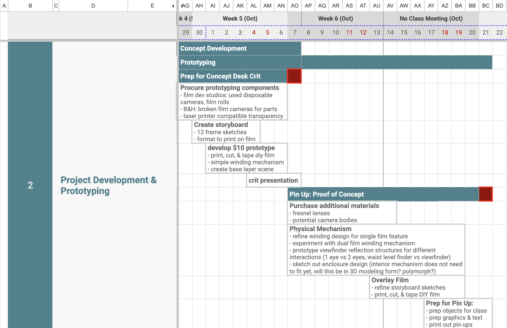
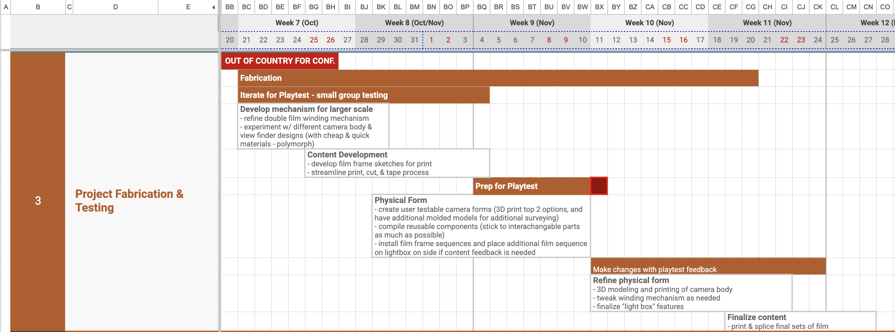
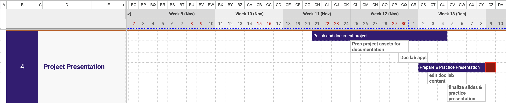

Detailed Timeline
Click here for up-to-date timeline
Phase 2 (project development & prototyping): For the next 3 weeks, there will be an emphasis on prototyping to quickly iterate on form and interaction

Phase 3 (project fabrication & testing): The month of November will focus on developing fabricating techniques while incorporating user testing. Towards the end of the month, there should be minimal notes on revisions and the final version can be printed and assembled.

Phase 4 (project presentation): The last two weeks are reserved for final tweaks and finishes, documention, and presentation prep
